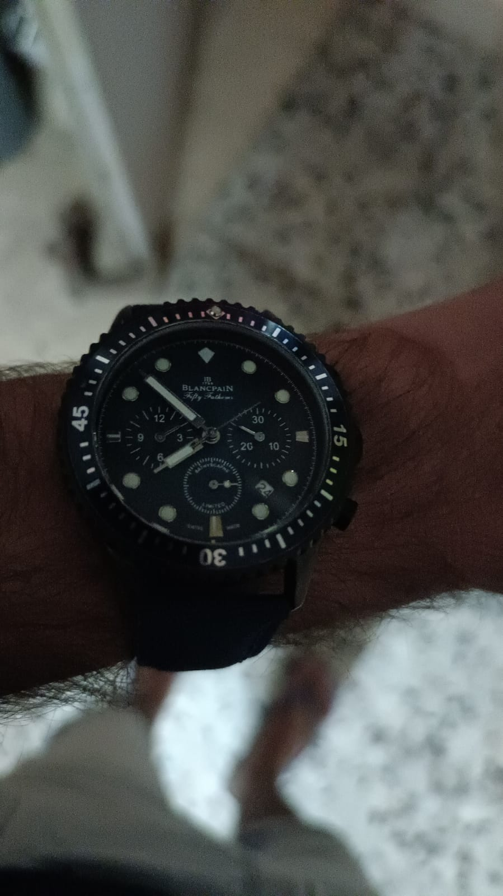
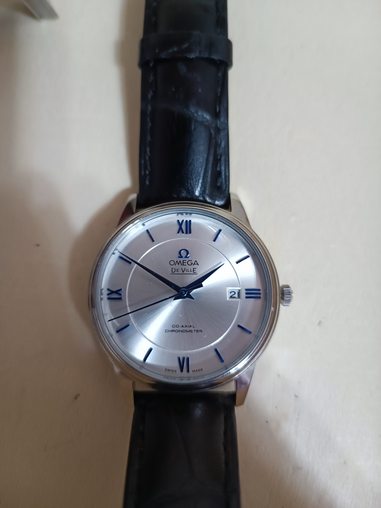
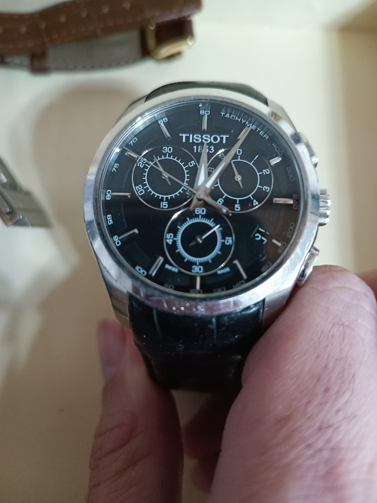
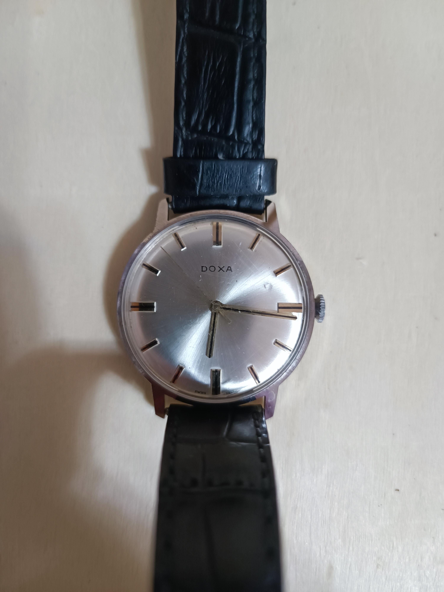
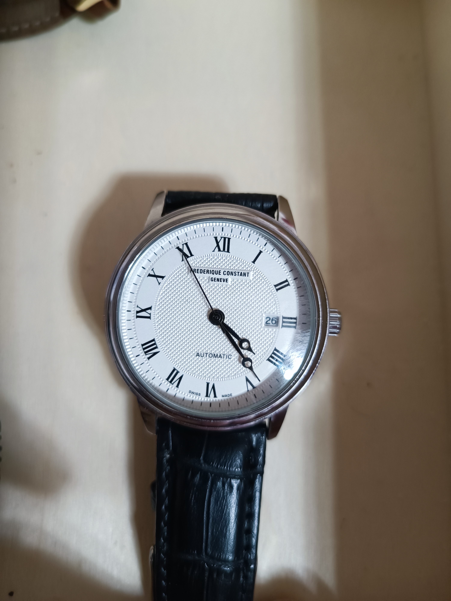
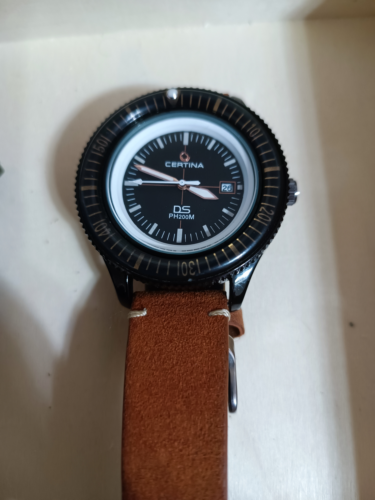
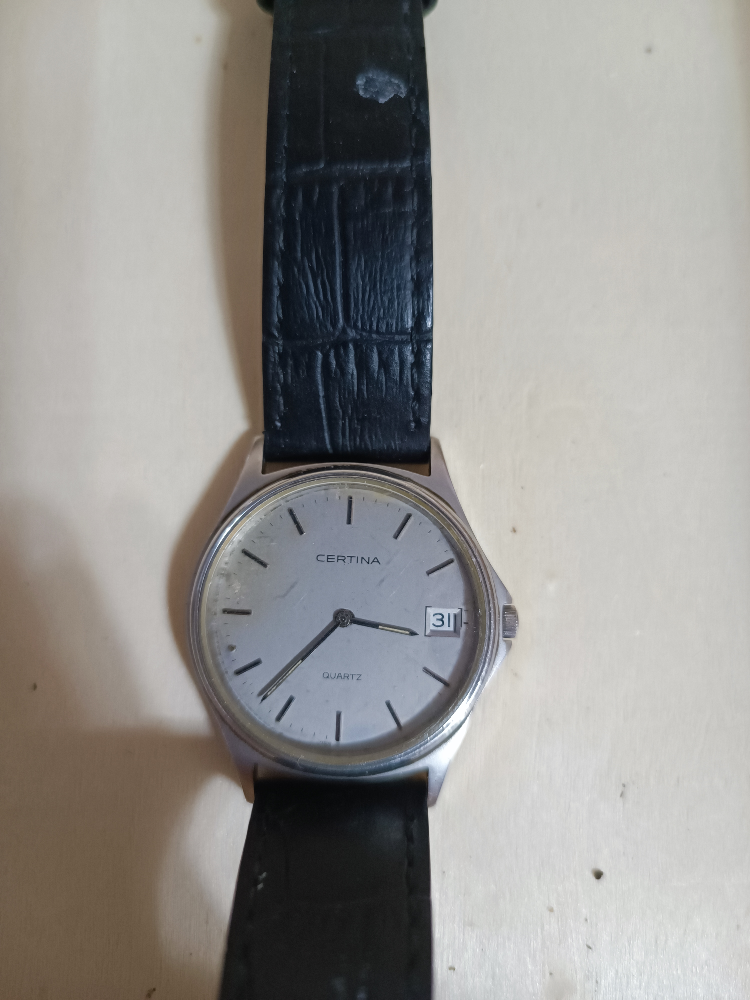

Blancpain SA is a Swiss luxury watch manufacturer, headquartered in Paudex/Le Brassus, Switzerland. It designs, manufactures, distributes, and sells prestige and luxury mechanical watches. Founded by Jehan-Jacques Blancpain in Villeret, Switzerland in 1735, Blancpain is the oldest surviving watchmaking brand. Blancpain has been a subsidiary of the Swiss Swatch Group since 1992, and is regarded as a top-tier Swatch brand. It is best known for its Fifty Fathoms diving watch introduced in 1953 and its 1735 Grande Complication wristwatch introduced in 1991.
Omega SA is a Swiss luxury watchmaker based in Biel/Bienne, Switzerland. Founded by Louis Brandt in La Chaux-de-Fonds in 1848, the company formerly operated as La Generale Watch Co. until incorporating the name Omega in 1903, becoming Louis Brandt et Frère-Omega Watch & Co. In 1984, the company officially changed its name to Omega SA and opened its museum in Biel/Bienne to the public. Omega is a subsidiary of The Swatch Group. Britain's Royal Flying Corps used Omega watches in 1917 for its combat units, followed by the U.S. Army in 1918, and NASA in 1969 for Apollo 11. Omega has been the official timekeeper of the Olympics since 1932 and is the current timekeeper of the America's Cup yacht race. Omega was a main partner of the 2022 Winter Olympics. 
Tissot SA is a Swiss watchmaker. The company was founded in Le Locle, Switzerland by Charles-Félicien Tissot and his son, Charles-Émile Tissot, in 1853. After several mergers and name changes, the group which Tissot SA belonged to was renamed the Swatch Group in 1998. Tissot is not associated with Mathey-Tissot, another Swiss watchmaking firm. 
Montres DOXA S.A., is an independent Swiss watch manufacturer founded in 1889. Doxa is best known for its dive watches. Between 1968 and 1978 DOXA became part of Synchron S.A. In 1978 DOXA S.A. was acquired by Aubrey Frères S.A. and then was sold to the Jenny family in 1997. In 2002 Doxa introduced re-editions of its watches and timepieces in limited quantities.

Frédérique Constant SA is a Swiss manufacture of luxury wristwatches based in Plan-les-Ouates, Geneva. It was acquired in 2016 by Citizen Holdings of Tokyo, Japan. The company was established in 1988 by Peter Stas and Aletta Stas-Bax (a Dutch married couple). Frédérique Constant Art Deco series Before the sale to Citizen, Frédérique Constant SA was owned by Union Horlogère Holding B.V., which also owned Alpina Watches International SA, and Ateliers deMonaco SA, and was, in turn, owned by Frédérique Constant Holding SA.
Raymond Weil Genève is a Swiss luxury watchmaker, founded in 1976 in Geneva. It is a family company founded by Raymond Weil and Simone Bédat. Simone Bedat and her son left the company in 1996 to form Bedat_&_Co. Raymond Weil led the company until his retirement in 2002. Weil died in 2014 and the company is now managed by his grandson Elie Bernheim.
Weil initially sold his designs from a foldout bridge table in a stall in Geneva. The line included both the traditional spring-powered and cog-and-gear mechanical Swiss watches and quartz-powered watches. He marketed the watches internationally towards lower-end luxury watch buyers.
Certina S.A. is a Swiss watch brand founded in Grenchen in 1888 by Adolf and Alfred Kurth, whereas unrelated Certina Holding AG is a German industrial conglomerate, founded by Hans Wehrmann. It is currently part of the Swatch Group.
 